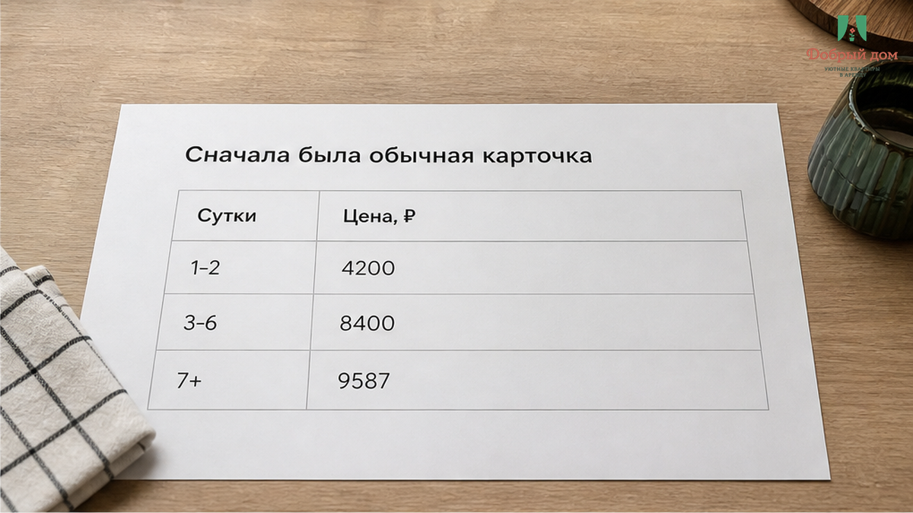
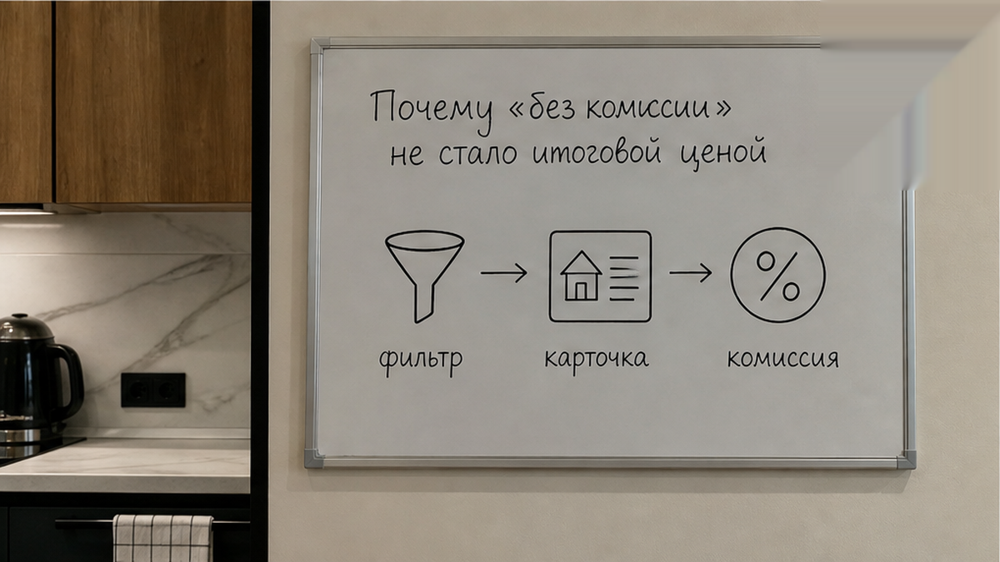
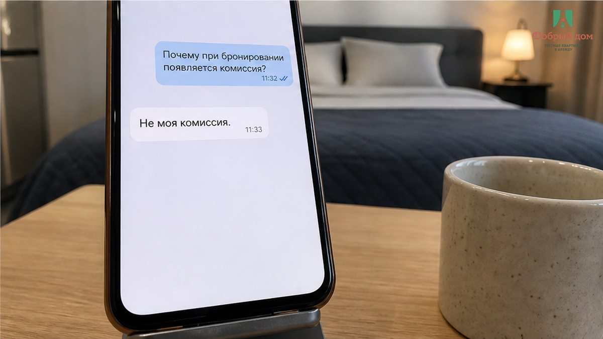
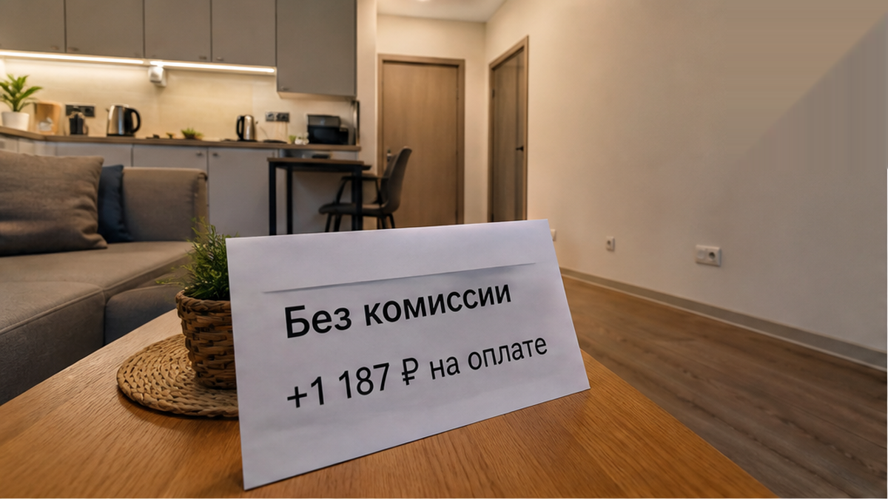
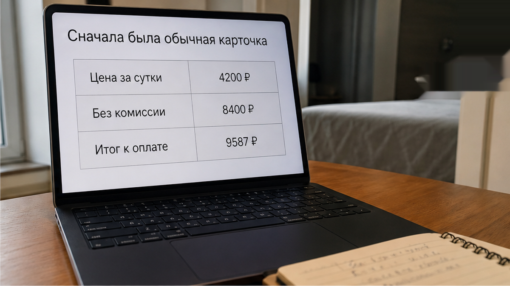
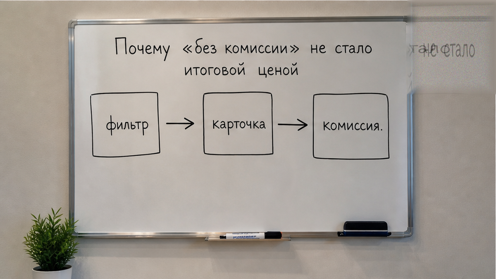
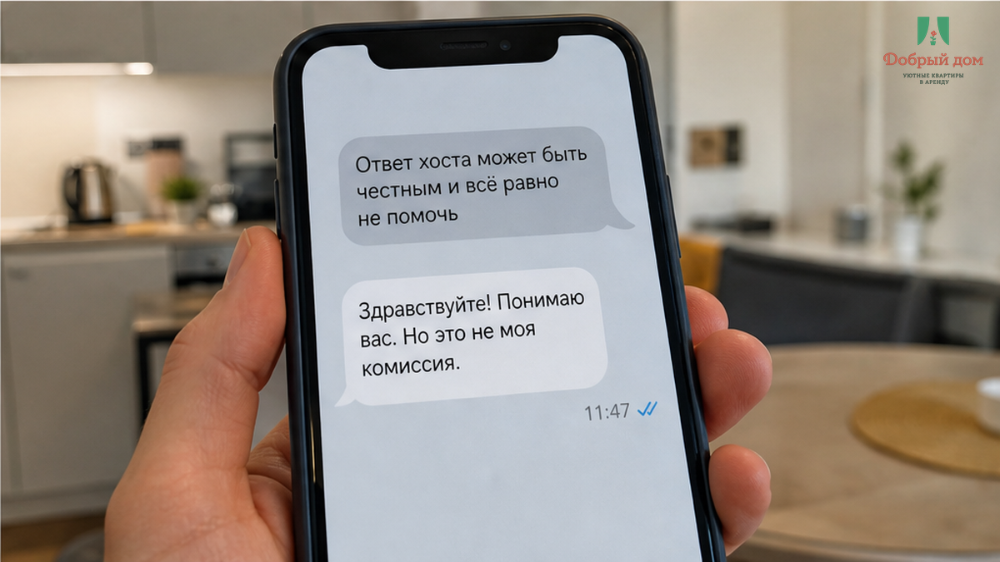

«В фильтре стояло „без комиссии“. Почему на экране оплаты +1 187 ₽?» — с этой строки началась переписка после обычного поиска посуточной квартиры в Тюмени. Гость увидел карточку за 4 200 ₽ за ночь, выбрал две ночи и сразу посчитал: 8 400 ₽. К последнему экрану он подошёл уже с понятным бюджетом, палец был над кнопкой «Оплатить», но рядом появилась новая строка — «Комиссия сервиса» на 1 187 ₽. Итог стал 9 587 ₽. Ночь не подорожала: как стоила 4 200 ₽, так и осталась. Изменилась сумма, которую человеку предложили перевести за весь срок.
Дальше всё обычно упирается в одну фразу: «Это комиссия площадки, не моя». Формально она верная: эти 1 187 ₽ хост не получает, они уходят сервису. Но гость спрашивал не о том, кому достанется строка. Он хотел понять, сколько денег нужно приготовить. В его расчёте было 8 400 ₽, а на оплате стало 9 587 ₽ — разница почти в четверть ночи. Иллюзия сломалась не о саму цену, а о слово «без комиссии», которое человек прочитал как «итоговая сумма не изменится». Я хост посуточной в Тюмени. Это «Добрый дом». Мы на связи в Telegram и MAX.

Гость зашёл на площадку, выбрал Тюмень с фильтром «без комиссии», увидел 4 200 ₽ за ночь и посчитал две ночи — 8 400 ₽. На шаге оплаты к проживанию добавили строку «Комиссия сервиса» 1 187 ₽, итог 9 587 ₽. Проблема не в арифметике, а в порядке: сначала цена для выбора, потом сумма к списанию, когда решение уже почти принято.

Для гостя слово «комиссия» звучит однозначно: если её нет, значит, сверху ничего не добавят. Но на площадке этим словом могут обозначаться разные вещи. Фильтр может относиться к посредническому вознаграждению, которое человек не платит агенту за подбор. А сервисный сбор самой платформы идёт отдельной строкой и появляется в расчёте бронирования.
Для интерфейса это две разные сущности. Для человека, который планирует поездку, — одна и та же неприятная неожиданность. Он не обязан заранее угадывать, какие именно сборы спрятаны за подписью фильтра. Если на первом шаге написано «без комиссии», естественно ожидать, что финальная сумма не вырастет на последнем.
Похожая путаница возникает и в других расчётах: когда в карточке видна одна цена, а на оплате появляется другая. Мы отдельно показывали, как в карточке стоит 3 400 ₽, а на оплате выходит 8 816 ₽ за две ночи. Суть там та же: взгляд цепляется за первую цифру, а бюджет нужно строить по последней.

Переписка в таком случае обычно выглядит коротко.
— Здравствуйте. Две ночи по 4 200 ₽?
— Да, 4 200 ₽ за ночь.
— Значит, за проживание 8 400 ₽?
— Да, за проживание 8 400 ₽.
— Тогда почему к оплате 9 587 ₽?
— Это комиссия площадки, не моя.
Последний ответ не обязательно ложный. Но он отвечает на вопрос «чья это строка», хотя гость задавал другой вопрос: «сколько я заплачу». В этот момент ему важно не распределение денег между сервисом и хостом, а полный итог за две ночи.
Если человек узнаёт о доплате уже перед кнопкой, он начинает сомневаться во всём объявлении. Даже честная строка выглядит как попытка провести его до оплаты, а потом поставить перед фактом. Поэтому для нормального заселения важна не только правильная сумма, но и момент, когда её называют.

Цена 4 200 ₽ нужна, чтобы сравнить варианты в поиске. Но решение о поездке принимают не по одной ночи. Принимают по сумме за весь срок: две ночи, три ночи, нужное количество гостей и все строки, которые появляются до оплаты.
В этом случае настоящих цифр было две. Первая — 8 400 ₽ за проживание. Вторая — 9 587 ₽ к оплате. Между ними стояла сервисная комиссия 1 187 ₽. Для площадки это отдельный сбор. Для гостя это деньги, которых не было в первоначальном расчёте.
Именно поэтому вопрос «сколько стоит ночь?» слишком короткий. Надёжнее спросить: «Какой итог за весь срок со всеми строками?» Если в ответ называют только цену за ночь, расчёт ещё не закончен.
На стоимость поездки могут влиять не только сервисные сборы. Отдельно стоит заранее уточнять условия залога и дополнительные услуги. В истории про фильтр «без залога», после которого залог оказался у двери, проблема тоже была в несовпадении ожидания и реального порядка оплаты.

Где именно на экране показан итог за весь срок и можно ли увидеть его до нажатия кнопки «Оплатить»?
Это не вопрос излишней подозрительности. Его нужно задать себе ещё на этапе выбора. Введите даты, количество гостей, откройте расчёт и прочитайте каждую строку. Не останавливайтесь на крупной цифре за ночь. Важно увидеть сумму проживания, сервисный сбор, уборку, депозит и любые другие указанные платежи.
Если площадка выводит итог только после ввода дат, это ещё не причина сразу закрывать страницу. Введите даты и остановитесь перед оплатой. Посмотрите, какая сумма появилась, и сравните её с тем, что вы посчитали по карточке.
А если на экране всё равно непонятно, что именно входит в итог? Напишите нам в Telegram или MAX, приложите скриншот расчёта без личных данных. Покажем, где цена проживания, где сбор площадки и какой вопрос задать до перевода.
Хосту можно написать прямо: «Назовите, пожалуйста, итог к оплате за две ночи со всеми строками». Нормальный ответ — конкретная цифра и пояснение, что в неё входит. Формулировка «там ещё что-то добавится» не является расчётом.

Это главный порядок в посуточной аренде. Сначала проверка объявления и итоговой суммы, потом деньги. Не наоборот. Нельзя оплачивать только потому, что карточка понравилась и дата удобная. Пока не виден полный расчёт, решение ещё не принято.
Сам сервисный сбор не обязательно означает обман. Площадка может брать его за собственные услуги и показывать отдельной строкой. Вопрос в другом: гость должен увидеть эту сумму до оплаты, а не узнавать о ней в момент, когда уже мысленно заселился.
Не стоит и обходить официальный расчёт обещанием «так будет дешевле». Если после бронирования в чате просят отдельно перевести остаток на карту, это уже новая схема оплаты, которую нужно проверять заново. О том, как после первого платежа появляется просьба перевести ещё раз, мы писали в разборе про повторный перевод за посуточную аренду.
В другой ситуации человек увидел обещание «всё включено», а затем получил доплату уже за дорогу. Такой сценарий разобран в материале про доплату 2 400 ₽ после слов «всё включено». Общий принцип тот же: условия должны быть понятны до действия, за которое с человека берут деньги.

Цена за ночь — это ориентир в карточке. Итог к оплате — сумма, по которой человек принимает решение. В нашем случае между 8 400 ₽ за две ночи и 9 587 ₽ на последнем экране оказалось 1 187 ₽, о которых гость узнал слишком поздно. Сначала проверка. Потом перевод. Не наоборот. «Добрый дом», Тюмень. Telegram: t.me/Dobriy_dom_72 · MAX: max.ru/id660300569233_biz · сайт: добрыйдом-72.рф · бронирование: добрыйдом-72.рф/booking/ · +7 993 574-83-22 · менеджер: t.me/Dobriy_dom_Tyumen